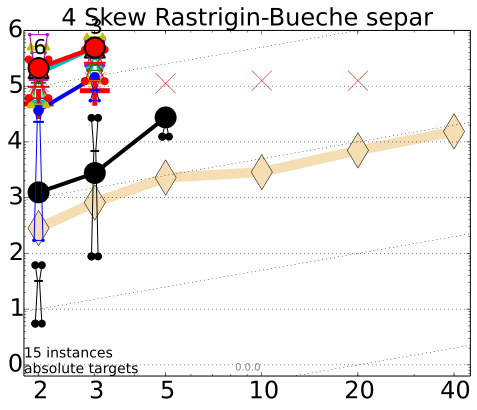
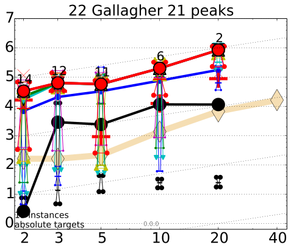
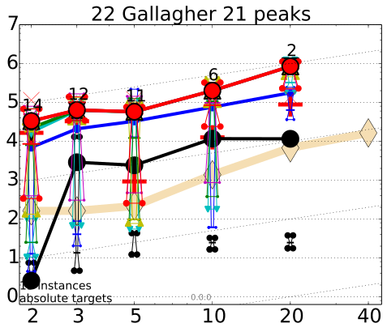

Average number of f-evaluations to reach target
 
Scaling of runtime to reach fopt+10# with dimension; runtime is measured in number of f-evaluations and # is given in the legend; Lines: average runtime (aRT); Cross (+): median runtime of successful runs to reach the most difficult target that was reached at least once (but not always); Cross (×): maximum number of f-evaluations in any trial. Notched boxes: interquartile range with median of simulated runs; All values are divided by dimension and plotted as log10 values versus dimension. Numbers above aRT-symbols (if appearing) indicate the number of trials reaching the respective target. The light thick line with diamonds indicates the respective best result from BBOB-2009 for ∆f =10−8. Horizontal lines mean linear scaling, slanted grid lines depict quadratic scaling.

Scaling of runtime to reach fopt+10# with dimension; runtime is measured in number of f-evaluations and # is given in the legend; Lines: average runtime (aRT); Cross (+): median runtime of successful runs to reach the most difficult target that was reached at least once (but not always); Cross (×): maximum number of f-evaluations in any trial. Notched boxes: interquartile range with median of simulated runs; All values are divided by dimension and plotted as log10 values versus dimension. Numbers above aRT-symbols (if appearing) indicate the number of trials reaching the respective target. The light thick line with diamonds indicates the respective best result from BBOB-2009 for ∆f =10−8. Horizontal lines mean linear scaling, slanted grid lines depict quadratic scaling.